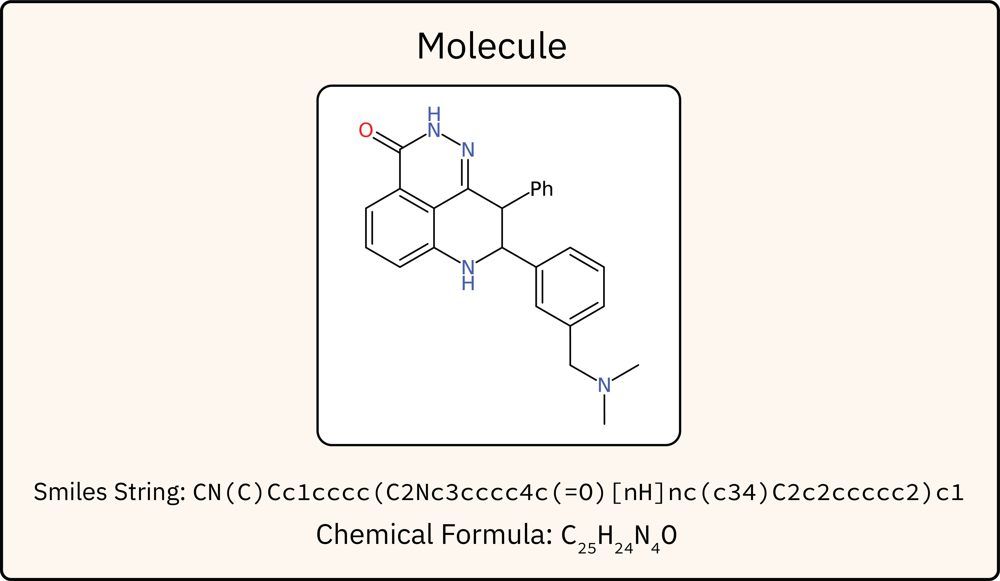

| Modality | Subtype | Data Description |
|---|---|---|
| IR | Spectrum | Vector size 1800: from 400cm-1 to 4000cm-1 with a 2cm-1 resolution |
| 1H-NMR | Spectrum | Vector size 10'000: from 10ppm to -2pmm with a 0.0012ppm resolution |
| Annotated Spectrum | Start, End, Centroid, Integration and Type of each peak | |
| 13C-NMR | Spectrum | Vector size 10'000: from 230ppm to -20pmm with a 0.025ppm resolution |
| Annotated Spectrum | Centroid and Intensity of each peak | |
| HSQC-NMR | Spectrum | Matrix shape 512x512: 1H-NMR-dim: Vector size 512: from 10ppm to -2pmm with a 0.023ppm resolution 13C-NMR-dim: Vector size 512: from 230ppm to -20pmm with a 0.488ppm resolution |
| Annotated Spectrum | X, Y coordinates and integration of each peak | |
| Positive MS/MS | Spectrum | m/z & Intensity of each peak |
| m/z Annotations | Chemical formula corresponding to the m/z of each peak | |
| Negative MS/MS | Spectrum | m/z & Intensity of each peak |
| m/z Annotations | Chemical formula corresponding to the m/z of each peak |
Unraveling Molecular Structure:
A Multimodal Spectroscopic Dataset for Chemistry
1IBM Research
2University Zurich
3EPFL
4NCCR Catalysis
*Equal Contribution
NeurIPS 2024 Datasets & Benchmarks
*Equal Contribution
NeurIPS 2024 Datasets & Benchmarks
Abstract
Spectroscopic techniques are essential tools for determining the structure of molecules. Different spectroscopic techniques, such as Nuclear magnetic resonance (NMR), Infrared spectroscopy, and Mass Spectrometry, provide insight into the molecular structure, including the presence or absence of functional groups. Chemists leverage the complementary nature of the different methods to their advantage. However, the lack of a comprehensive multimodal dataset, containing spectra from a variety of spectroscopic techniques, has limited machine-learning approaches mostly to single-modality tasks for predicting molecular structures from spectra.
Here we introduce a dataset comprising simulated 1H-NMR, 13C-NMR, HSQC-NMR, Infrared, and Mass spectra (positive and negative ion modes) for 790k molecules extracted from chemical reactions in patent data. This dataset enables the development of foundation models for integrating information from multiple spectroscopic modalities, emulating the approach employed by human experts. Additionally, we provide benchmarks for evaluating single-modality tasks such as structure elucidation, predicting the spectra for a target molecule, and functional group predictions.
Data Generation

The spectrum generation pipeline
Sample Spectra

Example molecule sample represented as SMILES
Data Overview
How to Use
Download Data:
Download it manually from https://zenodo.org/records/11611178 or use the following script:
git clone https://github.com/rxn4chemistry/multimodal-spectroscopic-dataset
cd multimodal-spectroscopic-dataset
bash download_spectras.sh
cd multimodal-spectroscopic-dataset
bash download_spectras.sh
Load Data:
ipython
import pandas as pd
data = pd.read_parquet('data/', columns=['smiles','h_nmr_peaks'])
More detail and examples you can find under: https://github.com/rxn4chemistry/multimodal-spectroscopic-dataset/
import pandas as pd
data = pd.read_parquet('data/', columns=['smiles','h_nmr_peaks'])
Citation
@article{alberts2024unraveling,
title={Unraveling Molecular Structure: A Multimodal Spectroscopic Dataset for Chemistry},
author={Alberts, Marvin and Schilter, Oliver and Zipoli, Federico and Hartrampf, Nina and Laino, Teodoro},
year={2024},
url={https://arxiv.org/abs/2407.17492},
}
title={Unraveling Molecular Structure: A Multimodal Spectroscopic Dataset for Chemistry},
author={Alberts, Marvin and Schilter, Oliver and Zipoli, Federico and Hartrampf, Nina and Laino, Teodoro},
year={2024},
url={https://arxiv.org/abs/2407.17492},
}